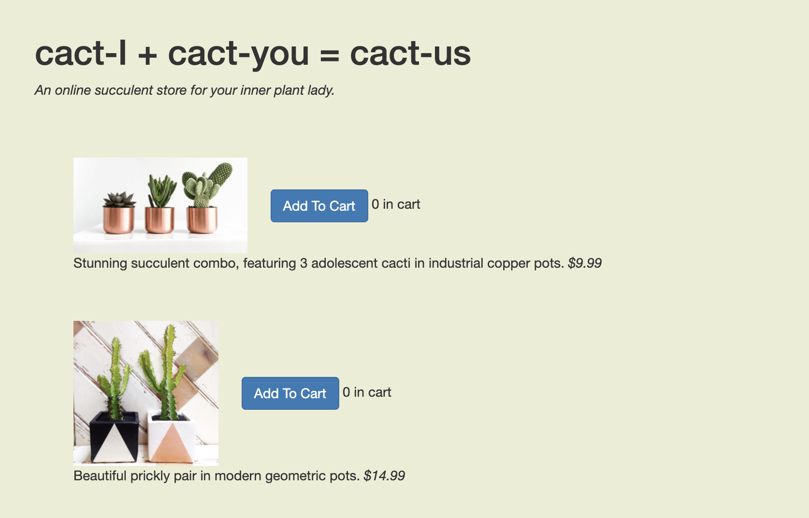
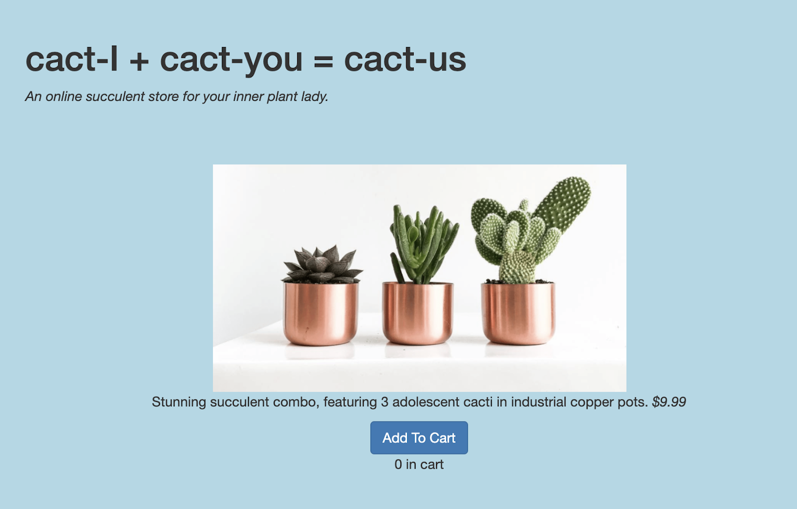
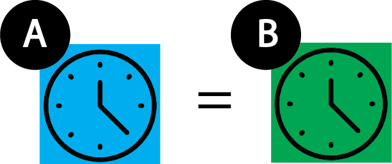
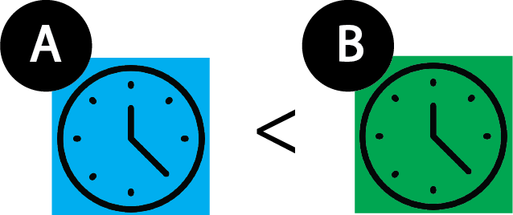
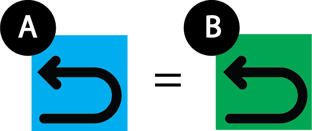
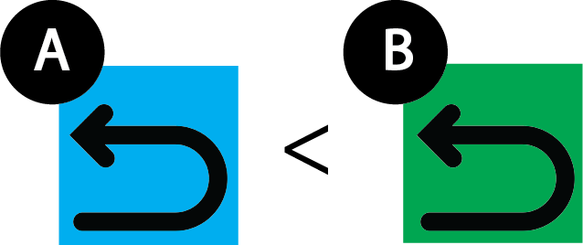
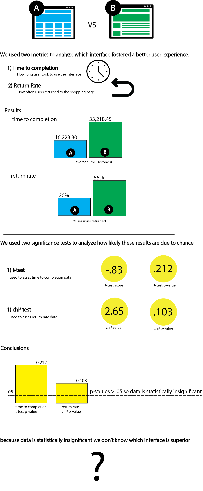

A/B Testing
An exploration of A/B testing as a means of quantitatively measuring the user's experience
Introduction
First, I created two versions of the same interface

Interface A

Interface B
Hypothesis
Next, I created null and alternative hypotheses based on how long the user took to checkout (time to completion) and how often the user had to return to the main page (return rate)
Time To Completion

Null Hypothesis
Interface A has no faster time to completion than interface B

Alternative hypothesis
Interface A has a faster time to completion than interface B
Reasoning: each image on interface B takes up more of the viewport, so selecting the proper items takes longer to scroll to
Return Rate

Null Hypothesis
Interface A has no lower return rate than interface B

Alternative hypothesis
Interface A has a lower return rate than interface B
Reasoning: because interface B takes longer to scroll through, users likely get impatient, checkout, and have to return for items they need to include
Data Collection
To collect data to disprove/prove these hypotheses I...
- Deployed heroku wesite which displays each interface 50% of the time.
- Downloaded the logs (snippet featured in pink) generated by the heroku site
- Synthesized the data by:
- subtracting time stamps to find the time to completion
- counting how many users returned from checkout to the main page
- Ran this synthesized data through several scripts that compute the t-test score, t-test p-value, chi2 value, and chi2 homogeneity value
AB_TESTING: C 1603143797739 0 0 rbabyjunm
AB_TESTING: A 1603143799136 0 0 csjhdac
AB_TESTING: B 1603143819048 0 0 bgaiztbn
AB_TESTING: A 1603143799136 1603143850672 mp2 csjhdac
AB_TESTING: A 1603143799136 1603143851256 mp2 csjhdac
AB_TESTING: B 1603143885964 0 0 axdihfhl
Conclusions

Takeaways on the method of A/B testing
- A/B testing limitations that affected results:
- Not enough data We likely found our results to be insignificant because there isn't enough test data with twenty users to prove anything conclusively. This is a limitation of A/B testing as large amounts of testing data isn't always accessible.
- Data Collection Because users were iterating through several iterations of the same website, it is understandable they would spend significantly more time on the version they hadn't seen before (version B). This is a flaw in how the data was collected, and shows the importance of unbiased data collection during A/B testing.
- Insights the results have on design principles
- Affordances Large images hinder the affordances of the website as having multiple smaller images demonstrate how much more of the site there is to scroll through. This may have led to the higher return rate in interface B, as people got impatient with the length of the website, checked out, and realized they hadn't hit their goal.
- Design & Accommodating User Needs A principle of design is remaining user-centric. In interface B the user's efficiency wasn't prioritized as the website took longer to scroll through, leading to higher time to completion rates and a less effective shopping experience.